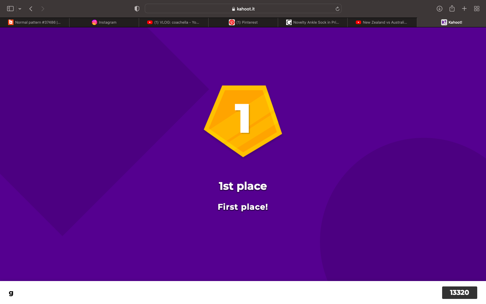

Other Coding Careers
Home
Web Dev Opportunities
Other Coding Careers
Web dev is a great start but it's only one of many different careers in digital technologies. Here are some of the
others.

- Application developer
- Server engineer
- Network engineer
- Project manager
- Systems Architect
- Artificial intelligence researcher
- Cyber security consultant (hacker)